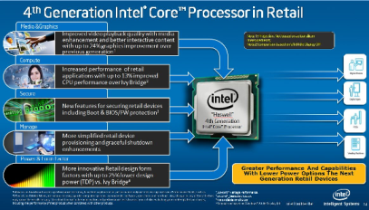

| Inicio | Historia | Intel Core |
|---|
Procesadores Intel Core
Intel Corporation es el mayor fabricante de circuitos integrados del mundo, según su cifra de negocio anual.8 La compañía estadounidense es la creadora de la serie de procesadores x86, los procesadores más comúnmente encontrados en la mayoría de las computadoras personales. Intel fue fundada el 18 de julio de 1968 como Integrated Electronics Corporation por los pioneros en semiconductores Robert Noyce y Gordon Moore.
 Copyright 2.019 - IES Los Manantiales
Copyright 2.019 - IES Los Manantiales